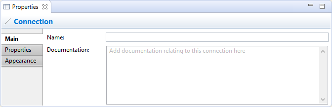
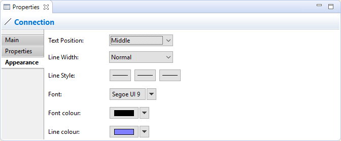

Sélectionner une connexion de note dans une vue signifie que vous pouvez modifier ou consulter ses propriétés dans la fenêtre des propriétés.
L'onglet principal
Modification des propriétés "principales" pour une connexion
| Nom: | Le nom de la connexion. S'il est fourni, il apparaîtra à côté de la connexion dans la vue. |
| Documentation: | Un endroit pour saisir de la documentation utilisateur liée à la connexion |
L'onglet propriétés
Pour davantage d'informations concernant la création et la gestion des propriétés utilisateur, voir Propriétés utilisateur.
L'onglet apparence
Modification des propriétés d'apparence pour une connexion dans une vue
| Position du texte: | Définit la position du texte qui apparaîtra à proximité de la ligne dans la vue. Les options possibles sont "Source", "Milieu" et "Cible". | |
| Épaisseur du trait: | Définit l'épaisseur du trait de la connexion. Les options possibles sont "Normal", "Moyen" et "Épais". | |
| Stule du trait: | Définit le type des extrêmités source et destination des lignes de connexion. ainsi que le style principal de la ligne. | |
| Police de caractères: | Définit la police de caractères utilisée pour le texte de la connexion sélectionnée. Le bouton "Défaut" définit la police de caractères selon le réglage par défaut tel qu'il a été défini dans les Préférences. | |
| Couleur de la police de caractères: | Définit la couleur de la police de caractères utilisée pour le texte de la connexion sélectionnée. Le bouton "Défaut" définit la couleur de la police de caractères conformément au réglage par défaut. | |
| Couleur de la ligne: | Définit la couleur de la ligne de connexion. Le bouton "Défaut" définit la couleur de la ligne conformément aux réglages par défaut. |